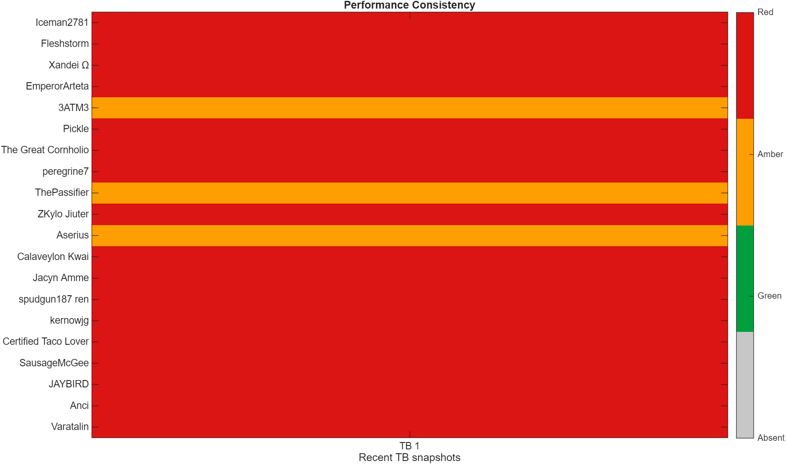
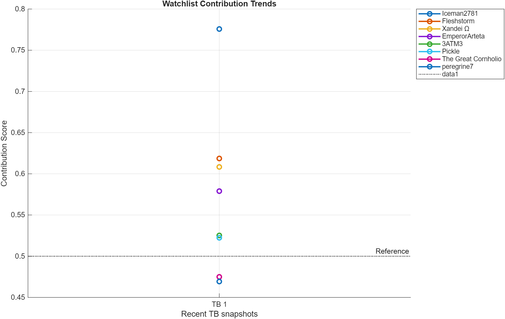

OANR Territory Battle
Officer Performance Log
Snapshot 2026-05-31 22:03:40. Analysed phases [2 3 4 5 6]. This page tracks patterns across TB snapshots.
1 logged snapshots50 players in log50 current players
History Note
The log has started. Trend and consistency flags become more useful after 3-5 TB snapshots.
Performance Consistency

Recent TBs across the top, players down the side. Grey means absent from that snapshot.
Watchlist Trends

Contribution score trend for players currently on the officer watchlist.
Consistent Underachievers
| Name | Status | PatternReason | RecentRuns | WatchFlags | ConcernFlags | CurrentRisk | CurrentReason | CurrentScore | ScoreChangePct |
|---|---|---|---|---|---|---|---|---|---|
| Iceman2781 | Watch | current baseline: missed deploy | 1 | 1 | 1 | Red | missed deploy | 0.776 | |
| Fleshstorm | Watch | current baseline: missed deploy | 1 | 1 | 1 | Red | missed deploy | 0.618 | |
| Xandei Ω | Watch | current baseline: low platoons | 1 | 1 | 1 | Red | low platoons | 0.608 | |
| EmperorArteta | Watch | current baseline: missed deploy | 1 | 1 | 1 | Red | missed deploy | 0.579 | |
| 3ATM3 | Watch | current baseline: acceptable activity, below expected GP | 1 | 1 | 1 | Amber | acceptable activity, below expected GP | 0.525 | |
| Pickle | Watch | current baseline: low platoons | 1 | 1 | 1 | Red | low platoons | 0.522 | |
| The Great Cornholio | Watch | current baseline: low waves | 1 | 1 | 1 | Red | low waves | 0.475 | |
| peregrine7 | Watch | current baseline: low platoons | 1 | 1 | 1 | Red | low platoons | 0.469 | |
| ThePassifier | Watch | current baseline: acceptable activity, below expected GP | 1 | 1 | 1 | Amber | acceptable activity, below expected GP | 0.467 | |
| ZKylo Jiuter | Watch | current baseline: low waves | 1 | 1 | 1 | Red | low waves | 0.463 | |
| Aserius | Watch | current baseline: acceptable activity, below expected GP | 1 | 1 | 1 | Amber | acceptable activity, below expected GP | 0.460 | |
| Calaveylon Kwai | Watch | current baseline: missed deploy | 1 | 1 | 1 | Red | missed deploy | 0.447 | |
| Jacyn Amme | Watch | current baseline: low waves | 1 | 1 | 1 | Red | low waves | 0.433 | |
| spudgun187 ren | Watch | current baseline: missed deploy | 1 | 1 | 1 | Red | missed deploy | 0.424 | |
| kernowjg | Watch | current baseline: missed deploy, low waves, low platoons | 1 | 1 | 1 | Red | missed deploy, low waves, low platoons | 0.410 | |
| Certified Taco Lover | Watch | current baseline: missed deploy, low waves, low platoons | 1 | 1 | 1 | Red | missed deploy, low waves, low platoons | 0.394 | |
| SausageMcGee | Watch | current baseline: missed deploy, low waves | 1 | 1 | 1 | Red | missed deploy, low waves | 0.372 | |
| JAYBIRD | Watch | current baseline: low waves | 1 | 1 | 1 | Red | low waves | 0.368 | |
| Anci | Watch | current baseline: missed deploy, low waves | 1 | 1 | 1 | Red | missed deploy, low waves | 0.316 | |
| Varatalin | Watch | current baseline: low waves, low platoons | 1 | 1 | 1 | Red | low waves, low platoons | 0.288 |
Reliable Core
| Name | Score | ExpectedRatio | Waves | PlatoonUnits | Missed |
|---|---|---|---|---|---|
| Locohoco | 0.931 | 1.350 | 105 | 40 | 0 |
| Din Al | 0.928 | 1.133 | 89 | 131 | 0 |
| Banshajn | 0.848 | 1.370 | 92 | 26 | 0 |
| Dulce Periculum | 0.805 | 1.232 | 82 | 31 | 0 |
| Opus | 0.784 | 1.061 | 72 | 66 | 0 |
| TigerMan | 0.777 | 1.191 | 77 | 34 | 0 |
| Taero | 0.773 | 1.266 | 83 | 8 | 0 |
| Cameron2394 | 0.755 | 1.136 | 70 | 88 | 0 |
| Talyn Stormborn | 0.747 | 1.211 | 71 | 70 | 0 |
| PRCalvin | 0.746 | 1.052 | 69 | 89 | 0 |
| FollowerofRevan | 0.738 | 1.116 | 73 | 16 | 0 |
| Chelli | 0.724 | 1.145 | 66 | 65 | 0 |
Latest Strong Performers
| Name | RiskGroup | Score | ExpectedRatio | Waves | PlatoonUnits | Missed |
|---|---|---|---|---|---|---|
| Banshajn | Green | 0.848 | 1.370 | 92 | 26 | 0 |
| Locohoco | Green | 0.931 | 1.350 | 105 | 40 | 0 |
| eddiebrock | Green | 0.584 | 1.312 | 56 | 7 | 0 |
| Taero | Green | 0.773 | 1.266 | 83 | 8 | 0 |
| EtA Mr Bodia | Green | 0.639 | 1.250 | 64 | 24 | 0 |
| Dulce Periculum | Green | 0.805 | 1.232 | 82 | 31 | 0 |
| Talyn Stormborn | Green | 0.747 | 1.211 | 71 | 70 | 0 |
| TigerMan | Green | 0.777 | 1.191 | 77 | 34 | 0 |
| Trojan | Green | 0.474 | 1.186 | 40 | 13 | 0 |
| Dimes and Pennies | Green | 0.712 | 1.182 | 70 | 27 | 0 |
Generated Files
- TB_Performance_Log.csv
- TB_Performance_Watchlist.csv
- officer_performance.html
- 08_performance_consistency.png
- 09_watchlist_trends.png